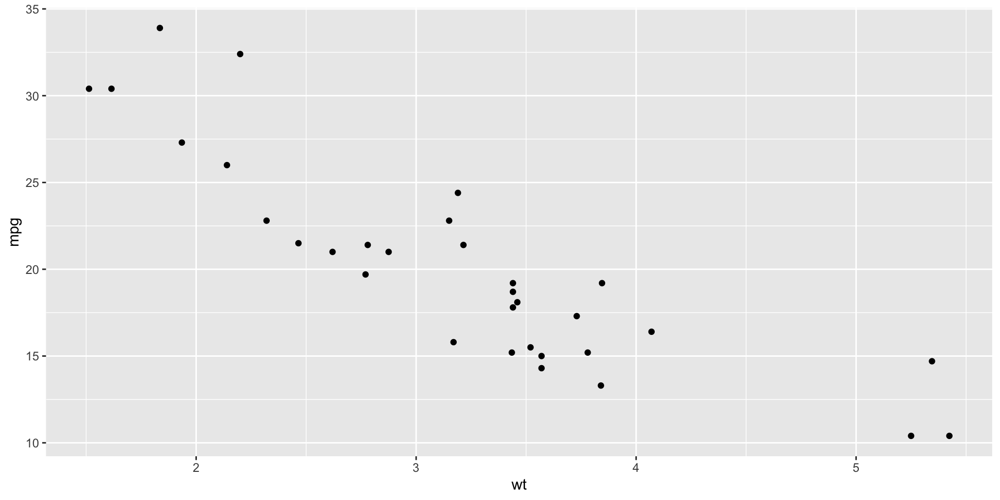

[1] 3Animated code annotations
Install both extensions:
Then add both as filters (order matters - flourish first):
Use flourish’s style option to pass roughnotation config via CSS custom properties:
Call:
lm(formula = mpg ~ wt, data = mtcars)
Residuals:
Min 1Q Median 3Q Max
-4.5432 -2.3647 -0.1252 1.4096 6.8727
Coefficients:
Estimate Std. Error t value Pr(>|t|)
(Intercept) 37.2851 1.8776 19.858 < 2e-16 ***
wt -5.3445 0.5591 -9.559 1.29e-10 ***
---
Signif. codes: 0 '***' 0.001 '**' 0.01 '*' 0.05 '.' 0.1 ' ' 1
Residual standard error: 3.046 on 30 degrees of freedom
Multiple R-squared: 0.7528, Adjusted R-squared: 0.7446
F-statistic: 91.38 on 1 and 30 DF, p-value: 1.294e-10 mpg cyl disp hp drat wt qsec vs am gear carb
Mazda RX4 21.0 6 160.0 110 3.90 2.620 16.46 0 1 4 4
Mazda RX4 Wag 21.0 6 160.0 110 3.90 2.875 17.02 0 1 4 4
Datsun 710 22.8 4 108.0 93 3.85 2.320 18.61 1 1 4 1
Hornet 4 Drive 21.4 6 258.0 110 3.08 3.215 19.44 1 0 3 1
Merc 240D 24.4 4 146.7 62 3.69 3.190 20.00 1 0 4 2
Merc 230 22.8 4 140.8 95 3.92 3.150 22.90 1 0 4 2
Fiat 128 32.4 4 78.7 66 4.08 2.200 19.47 1 1 4 1
Honda Civic 30.4 4 75.7 52 4.93 1.615 18.52 1 1 4 2
Toyota Corolla 33.9 4 71.1 65 4.22 1.835 19.90 1 1 4 1
Toyota Corona 21.5 4 120.1 97 3.70 2.465 20.01 1 0 3 1
Fiat X1-9 27.3 4 79.0 66 4.08 1.935 18.90 1 1 4 1
Porsche 914-2 26.0 4 120.3 91 4.43 2.140 16.70 0 1 5 2
Lotus Europa 30.4 4 95.1 113 3.77 1.513 16.90 1 1 5 2
Volvo 142E 21.4 4 121.0 109 4.11 2.780 18.60 1 1 4 2Use flourish’s target-rx for pattern matching:
All roughnotation options work via CSS custom properties:
| Property | Example | Description |
|---|---|---|
--rn-type |
circle |
underline, box, circle, highlight, strike-through, crossed-off, bracket |
--rn-color |
red |
Any CSS color |
--rn-animate |
true |
Enable/disable animation |
--rn-animationDuration |
800 |
Duration in ms |
--rn-strokeWidth |
2 |
Line thickness |
--rn-padding |
5 |
Space around element |
--rn-multiline |
true |
Annotate across lines |
--rn-iterations |
2 |
Drawing passes |
--rn-brackets |
left,right |
Bracket sides |
--rn-index |
1 |
Fragment order |
You can mix code annotations with regular text annotations:
This text has a highlighted word.
